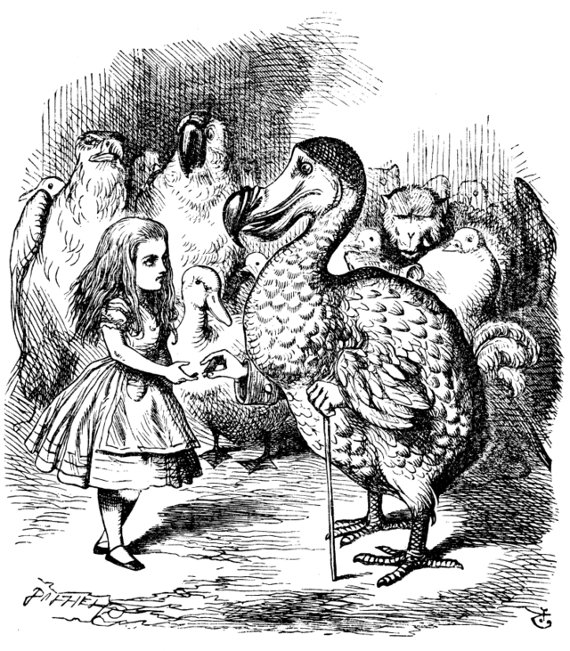

Chapter 3: A Caucus-Race and a Long Tale
They were indeed a queer-looking party that assembled on the bank—the birds with draggled feathers, the animals with their fur clinging close to them, and all dripping wet, cross, and uncomfortable.
The first question, of course, was how to get dry again: they had a consultation about this, and after a few minutes, it seemed quite natural to Alice to find herself talking familiarly with them.
At last the Mouse, who seemed to be a person of authority among them, called out, 'Sit down, all of you, and listen to me! I'll soon make you dry enough!'
Alice kept her eyes anxiously fixed on it, for she felt sure she would catch a bad cold if she did not get dry very soon.
'Ahem!' said the Mouse with an important air, 'are you all ready? This is the driest thing I know. Silence all round, if you please!'
‘William the Conqueror, whose cause was favoured by the pope, was soon submitted to by the English, who wanted leaders…'
'Ugh!' said the Lory, with a shiver.
The Mouse did not notice and continued, ‘…Edwin and Morcar, the earls of Mercia and Northumbria, declared for him…’
'Found what?' said the Duck.
'Found it!' the Mouse replied rather crossly.
Alice, still soaking wet, sighed. 'As wet as ever,' she said in a melancholy tone: 'it doesn't seem to dry me at all.'
'In that case,' said the Dodo solemnly, 'I move that the meeting adjourn, for the immediate adoption of more energetic remedies.'
'What I was going to say,' said the Dodo, 'was, that the best thing to get us dry would be a Caucus-race.'
'What is a Caucus-race?' asked Alice.
'Why,' said the Dodo, 'the best way to explain it is to do it.'
And so they began to race in a circle—without a start or finish—until they were all dry.
Finally, the Dodo called out, ‘The race is over!’
'But who has won?' they asked.
'Everybody has won, and all must have prizes,' said the Dodo.
Alice, confused, handed out a box of comfits to all the creatures.
'But she must have a prize herself!' said the Mouse.
'Only a thimble,' said Alice.
The Dodo took it and solemnly presented it back to Alice: ‘We beg your acceptance of this elegant thimble.’
Alice thought it all very absurd, but she didn’t dare laugh.
The next thing was to eat the comfits: this caused noise and confusion.
After settling down, Alice turned to the Mouse, ‘You promised to tell me your history, you know.’
‘Mine is a long and a sad tale!’ said the Mouse.
Alice, looking at the Mouse's tail, thought it meant a “long tail” rather than a “long tale.”
'Fury said to a
mouse, That he
met in the
house,
"Let us
both go to
law…"
‘You are not attending!’ said the Mouse sharply.
Alice, startled, apologized. ‘I beg your pardon.’
But the Mouse, offended, walked away.
‘Please come back and finish your story!’ Alice called, but the Mouse shook its head and left.
'What a pity it wouldn't stay!' sighed the Lory.
'I wish I had our Dinah here, I know I do!' said Alice aloud.
'And who is Dinah, if I might venture to ask the question?' asked the Lory.
Alice eagerly explained about Dinah, her cat, but this caused a commotion among the birds.
One old Magpie wrapped itself up, ‘I must be getting home!’
Alice, left alone, felt very lonely. 'I wish I hadn’t mentioned Dinah!' she said to herself.
In a little while, she heard pattering footsteps and looked up, half-hoping the Mouse had changed its mind.